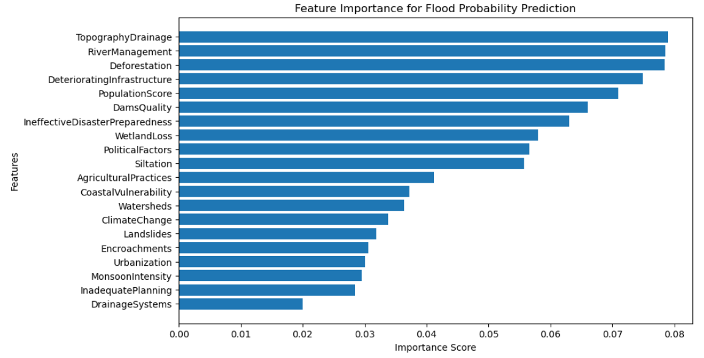
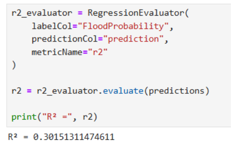

DATA & MACHINE LEARNING
Flood Risk Analysis and Prediction using Apache Spark
A data analysis and machine learning project exploring flood risk through large-scale data processing, feature analysis and predictive modelling.
ANALYSIS & RESULTS
Selected visualisations and results from the flood risk analysis project.

Flood Probability Heatmap

Feature Importance

Model Results
01 — OVERVIEW
This project focused on analysing flood-related data and developing a predictive model to explore patterns associated with flood risk. Apache Spark and PySpark were used to process and analyse the dataset, followed by machine learning techniques for prediction.
02 — PROBLEM
Flood datasets can contain multiple environmental and geographical variables that need to be processed and analysed to identify meaningful relationships. The challenge was to transform the raw data into useful features and build a predictive model that could estimate flood risk.
03 — APPROACH
Obtained a flood-related dataset and prepared it for analysis.
Cleaned the dataset and prepared relevant features for modelling.
Used PySpark to process and analyse the dataset.
Applied machine learning techniques to evaluate flood risk prediction.
04 — RESULTS
The predictive model was evaluated using Root Mean Square Error (RMSE) and the coefficient of determination (R²).
RMSE
R² Score
Processing Framework
05 — TECHNOLOGY
06 — LEARNING